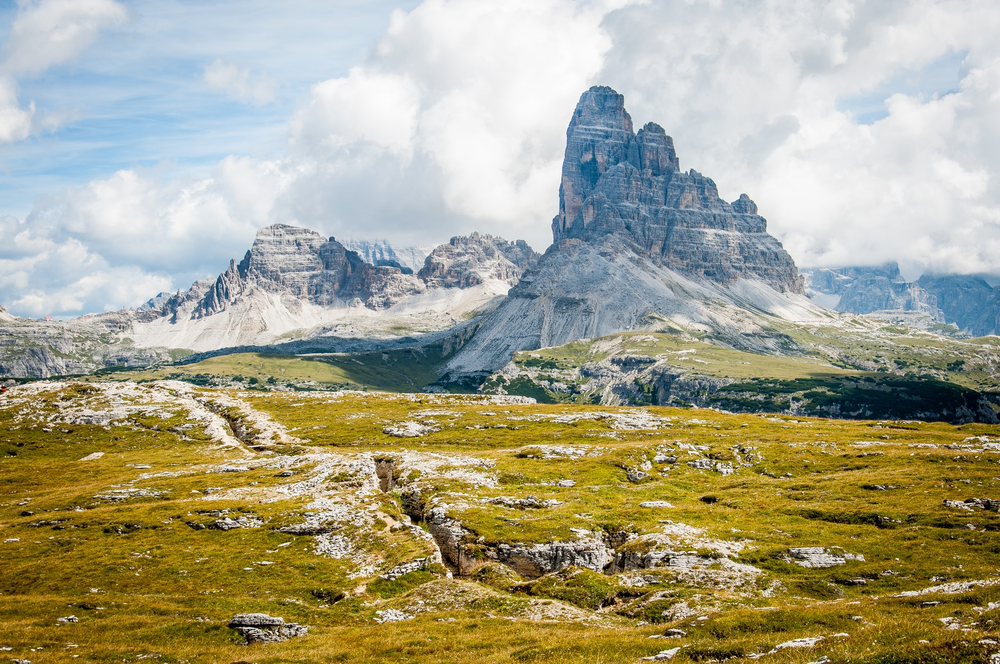
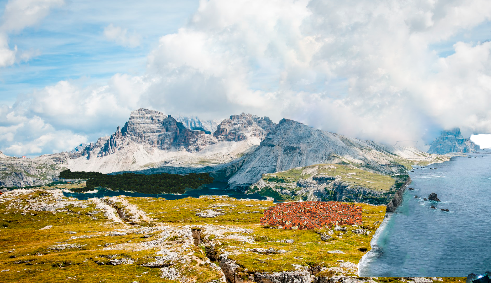
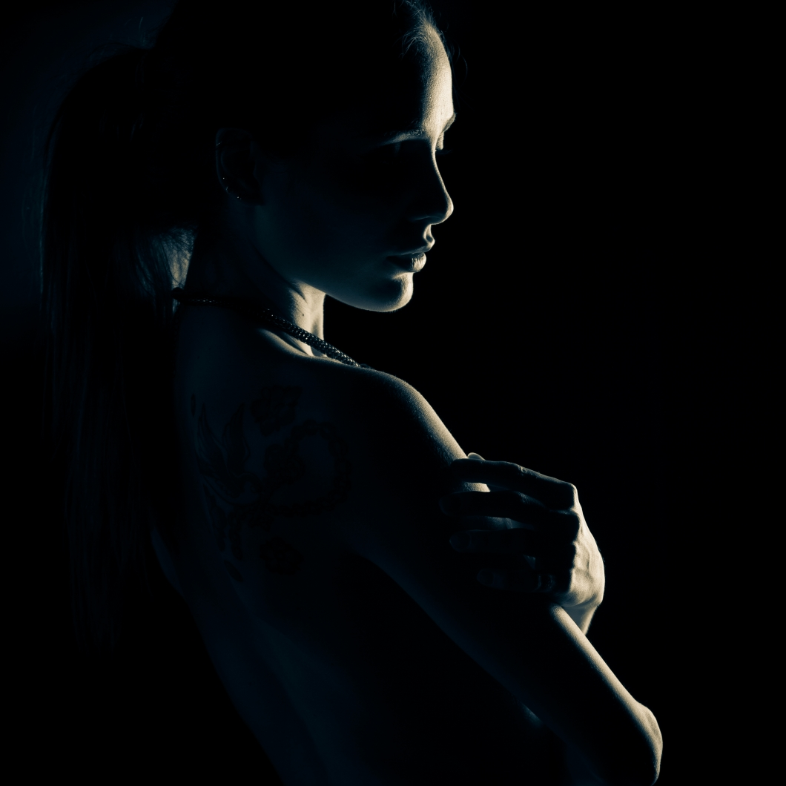
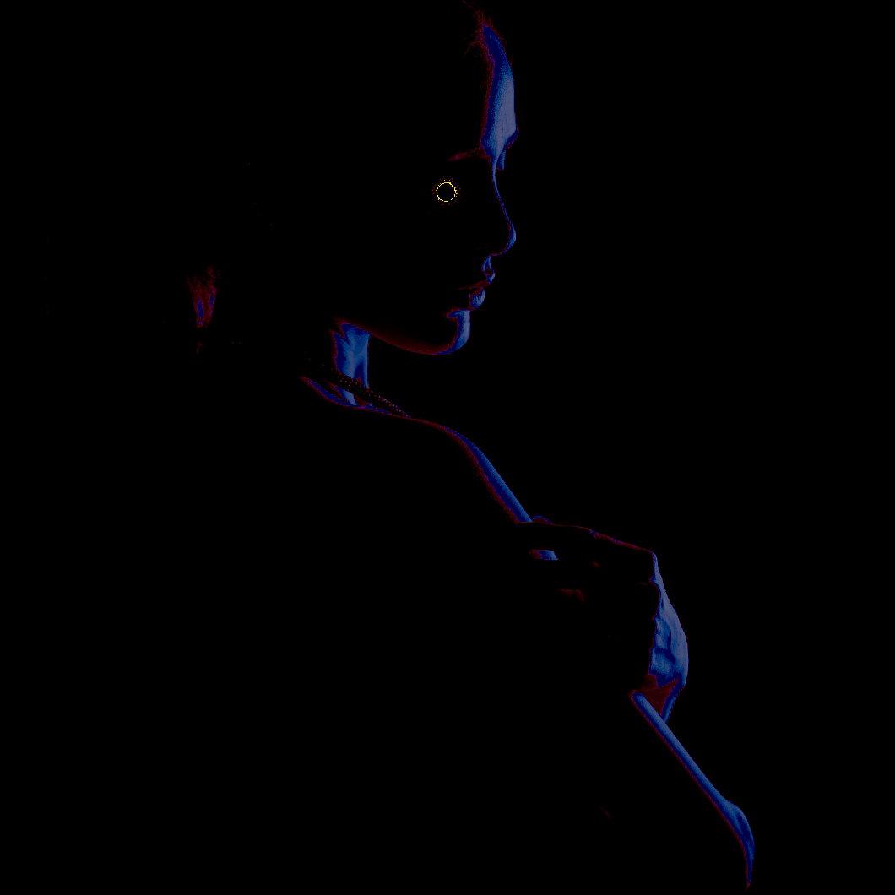

Photoshop
Som multimediedesignere, skal vi have grundlæggende kendskab til både Photshop og Illustrator.
Photoshop er et genialt værktøj til at manipulere billeder med. Med Photoshop har man magten til at ændre alt ned til den enkelte pixel. Vi benytter os af artboards i photoshop - som kan sammenlignes med papir. Vi arbejder så på flere lag af papir, som gør det muligt for os at arbejde oven på 'orginalen'.
Forneden kan du se en række af forskellige ting, jeg har lavet med Photoshop.
Med brug af en række forskellige tools så som: 'Mask' og 'Content aware' - har jeg formodet at fjerne toppen af bjerget, uden det ser unaturligt ud i skyerne. Ud over det har jeg tilføjet en skov, en lille by, samt noget vand.
Photoshop kan også gøre mange andre ting. Jeg har bla. brugt det til at promovere en burger hos Gourmet i Skive.

Her har jeg primært leget med effecter og farver. Det skal dog pointeres, at det som tog længst tid, var at fritlægge logoet, og gøre det transparent fra sin orginale baggrund.
Det er absolut kun fantastien, som sætter grænser med photoshop.
 